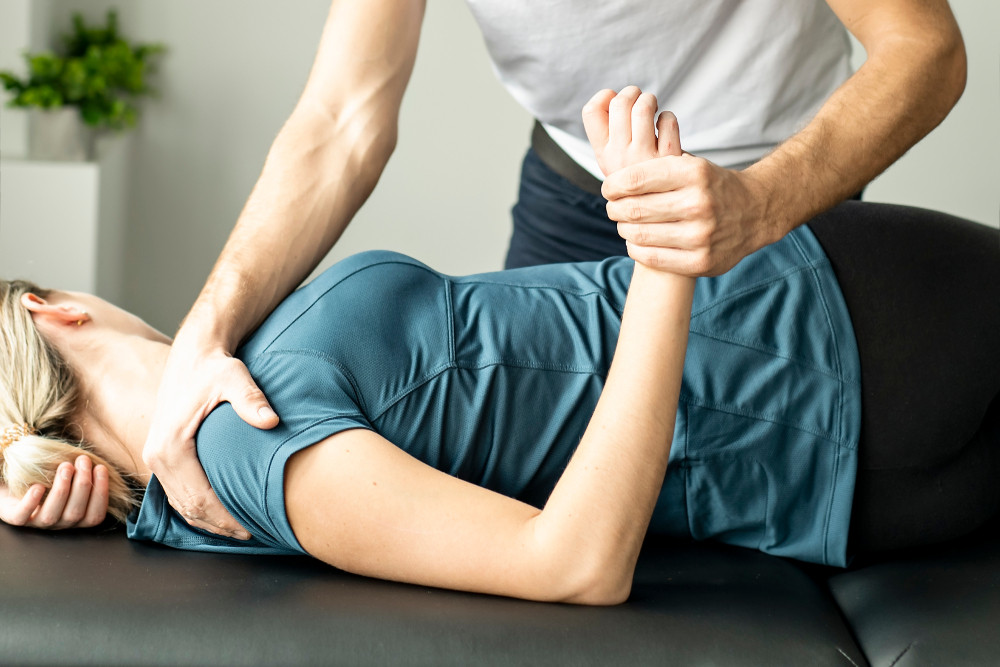

From Savile Row tailor to one of London’s most experienced osteopaths — 30 years of getting people out of pain.
Before he ever picked up an anatomy textbook, Hussein Eshref spent his days in the dusty workshops of Savile Row, cutting cloth for some of London’s finest tailors. But a chronic asthma condition led him to try osteopathy — and the results changed everything.
The transformation was so profound that Hussein left tailoring behind and trained as an osteopath, graduating with Honours in 1996. That same year, he opened the Canonbury Clinic of Osteopathy on Upper Street — making it Islington’s longest-established osteopathic practice.
Thirty years on, Hussein has treated over 15,000 patients. Many who first walked through the door decades ago still travel back from across the country because they trust his hands and his judgement.

Hussein has exceptional success rates with neck and shoulder problems — the kind of stubborn, recurring pain that other practitioners struggle with.
His intensive work with professional dancers has also made him one of the leading osteopaths for lower limb disorders, particularly ankle, foot, knee and iliotibial band syndrome. When elite performers need to get back on stage, Hussein is the person they call.
His approach combines deep anatomical knowledge with rigorous hands-on treatment and the latest technology — including Class 4 laser therapy, shockwave therapy and therapeutic ultrasound — to deliver results where other methods have failed.
Hussein has served as consultant osteopath to several of the world’s leading dance companies and physical theatre groups. His client list includes the Royal Ballet, the Kirov, Rambert Dance Company, Richard Alston Dance Company, DV8 Physical Theatre and Wayne McGregor’s Random Dance.
He works closely with leading Pilates instructors, yoga teachers and personal trainers to ensure every patient receives 360-degree care — because lasting recovery often requires a team effort.
Whether it’s been bothering you for days or decades, the first step is the same — get in touch and let’s work out what’s going on.
Hussein’s training extends well beyond conventional osteopathy. He studied psychosomatics and naturopathy alongside his osteopathic degree, and has a deep interest in the body-mind connection in illness and recovery.
He is the published author of Easy Exercise to Relieve Stress, and is currently working on further publications on health and wellbeing. His writing reflects the same philosophy he brings to the clinic: practical, evidence-based advice that people can actually use.
Hussein is also a certified RockDoc — trained in the assessment and treatment of musicians and performers in high-pressure environments.
Ian — Patient
Everything you need to know before your first visit.
Your first visit lasts around 45–60 minutes. Hussein will take a thorough case history, ask about your symptoms, lifestyle and medical background, then carry out a physical examination. He’ll explain exactly what’s causing your pain and outline a treatment plan before any hands-on work begins. Most patients receive treatment on their first visit.
Wear comfortable, loose-fitting clothing. Depending on the area being treated, you may be asked to remove some clothing so Hussein can assess and treat the affected area properly. You’ll always be appropriately covered with towels, and your comfort is the priority.
It depends on your condition. Some patients feel significant improvement after one or two sessions. More complex or long-standing problems may require a course of treatment over several weeks. Hussein will give you an honest assessment at your first appointment — he won’t recommend treatment you don’t need.
Most patients find treatment comfortable and relieving. Some techniques — particularly deep tissue work on very tight or inflamed areas — can cause mild discomfort, but Hussein always works within your tolerance and will check in with you throughout. It’s common to feel a bit sore for a day or two afterwards, similar to the feeling after exercise.
Yes. The Canonbury Clinic is recognised by all major health insurers including AXA PPP, Bupa, Aviva, Vitality and PruHealth. If you have private health insurance, check your policy for osteopathy cover — many plans include it. We can provide the documentation you need for your claim.
There are two levels of treatment available at the clinic. The first is hands-on osteopathy, including low-level laser therapy and ultrasound, at £95 per session. The second tier combines hands-on osteopathy with high-powered laser therapy and shockwave therapy at £170 per session.
The high-powered laser machine is the only one in an osteopathy clinic in the UK — it represents the latest technology and delivers outstanding outcomes in a short period, usually resulting in fewer sessions overall.
30 years of experience. Over 15,000 patients helped. Your recovery starts with a conversation.
Made with ❤ by Therapy Webgenie
We use cookies to improve your experience. See our cookie policy for details.